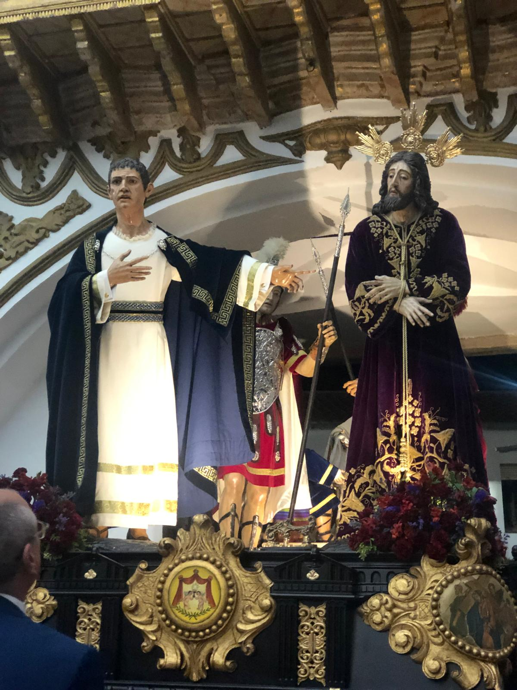
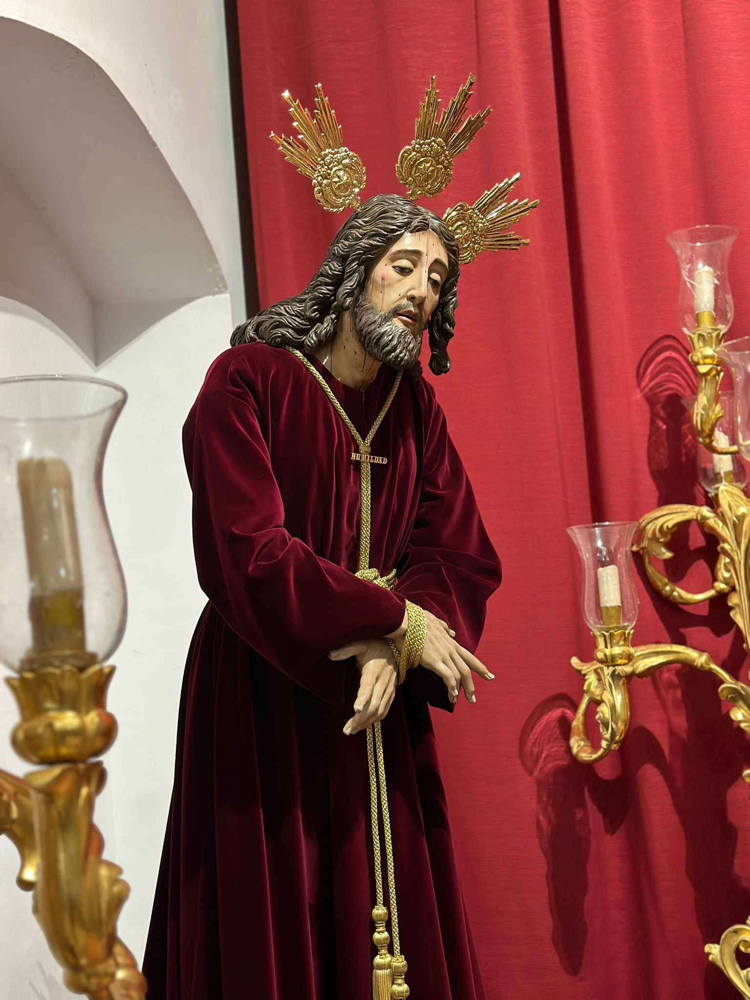
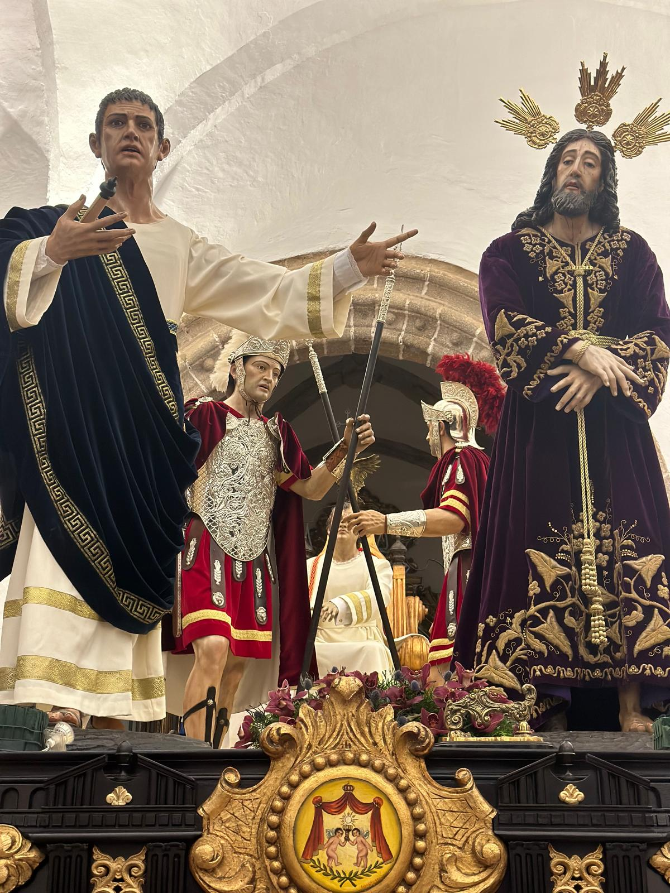
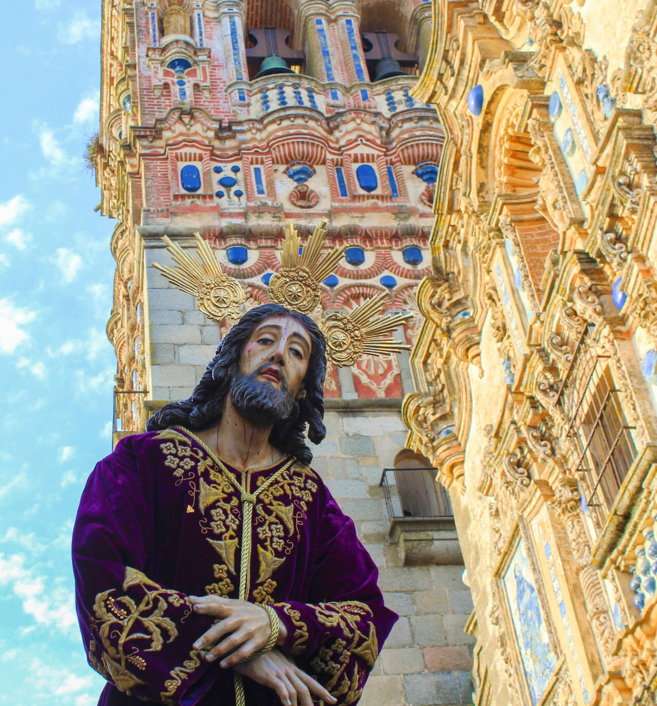

Jesús de la Humildad
La Sentencia de Jesús
Jesús es llevado ante Pilatos, quien se lava las manos mientras el Pregonero pronuncia la sentencia...
Algunas imágenes y videos enviados por colaboradores




Marchas dedicadas al Cristo de la Sentencia (Humildad)
- Jesús ante Pilatos.
- La Sentencia.
- Al Compás de tu Humildad - interpretada por la Agrupación Musical Nuestro Padre Jesús Nazareno.
- "Y tú, mi salvador" - dedicada a la gente que venció el cáncer. Video Abajo
Las Andas del Misterio (paso)
Las andas fueron realizadas en tres fases, culminadas en el año 2002...
Capataz del paso y su auxiliar:
Capataz: D. Francisco Gómez Jiménez.
Auxiliar: D. Juan Manuel García Ceberino.
Cantidad de Costaleros debajo del Misterio (paso)
44 Costaleros en 2023 fue la fecha en la que más costaleros estaban debajo del misterio.